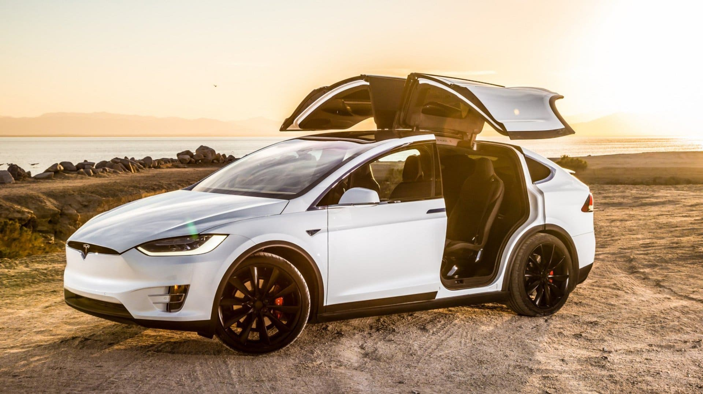

Un Coche perfecto

El Tesla Model X es un SUV completamente eléctrico de Tesla, con enfoque Premium y con posibilidad de acomodar hasta siete personas. Este modelo se comercializa desde 2016, con un precio que parte desde 97.150 euros. Cuenta con dos motores eléctricos y una gran batería de iones de litio que le proporciona una autonomía entre 417 y 565 kilómetros, dependiendo de la versión. Por concepto, los únicos rivales del Tesla Model X son el Jaguar I-PACE, el Audi e-tron y el Mercedes EQC. Próximamente, también se lanzará al mercado el BMW iX3.